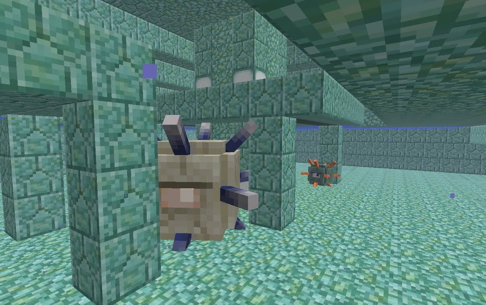
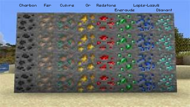
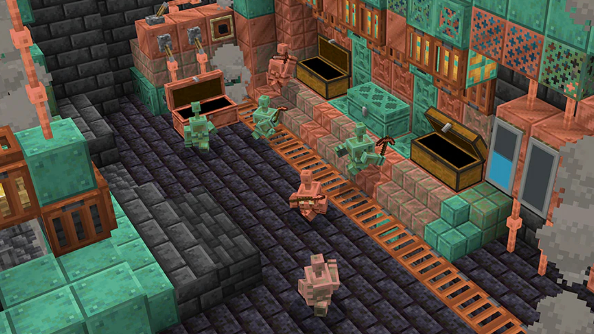
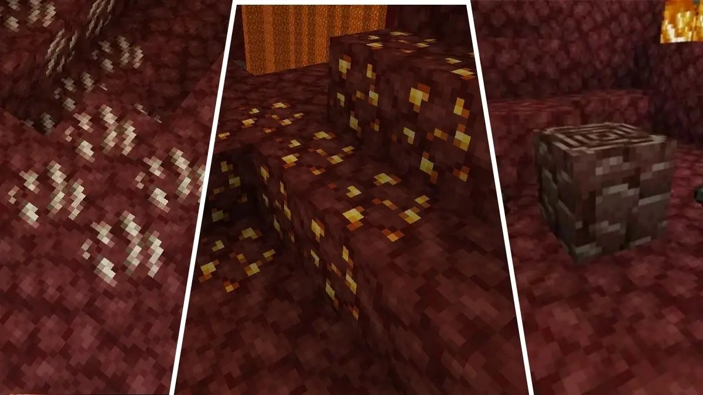
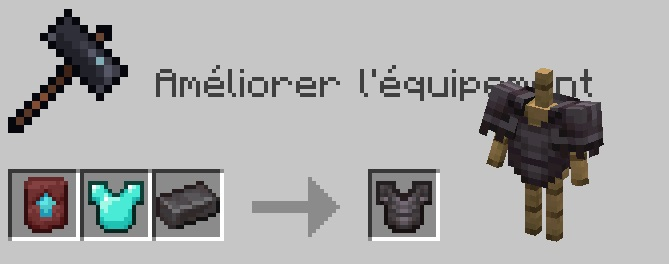
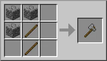
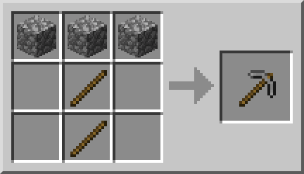
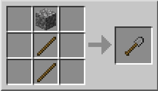

Minecraft selon des lycéens

Vous pouvez vous rediriger vers :
L'histoire de Minecraft
La Communauté
Le Quiz sur Minecraft
Sommaire :
C'est quoi ce site ?L'histoire de Minecraft
La communauté
Minecraft c'est quoi? :
- Les dimensions :
- Les boss :
- Les minerais
- Les outils, les armures et les armes
- Les villages et les villageois
Les serveurs
Les sources
C'est quoi ce site?
Minecraft est un des meilleurs jeux au monde (si ce n'est LE meilleur) ! Ce site lui est dédié, il vous permettra de découvrir rapidement le jeu, son histoire et le meilleur de sa communauté selon des lycéens.

L'histoire de Minecraft
L'histoire de Minecraft s'étale de 2009 à nos jours, de la alpha à la 1.21, pleins de maj, de nouveautés et toujours autant de hype ! Cliquez sur le lien pour la découvrir.

La communauté
La communauté MC s'agrandie de jours en jours, c'est un jeu qui ne vieillit pas ! Découvrez les youtubeurs de légendes qui ont façonnés la communauté !

Minecraft c'est quoi ?
MC ,comme on l'appelle, est un jeu de type sandbox, monde ouvert et généré procéduralement, c'est-à-dire que votre monde dépend de la seed renseignée, qui sera choisie aléatoirement lorsque vous ne la choississez pas.

Comme vous pouvez l'imaginer, c'est un jeu composé de cube, ces derniers ont 1m de coté. Dans MC, tout est cubique.
C'est un jeu qui peux ce jouer online ou non, en solo ou en multijoueur. Il existe 2 version du jeu la version "Bedrock" accessible sur Pc et console et la version "Java" accessible uniquement sur Pc. Le jeu posséde des mecaniques et des objectifs et le joueur décide de les appliquer ou de les ignorer.
Les dimensions
Minecraft contient trois dimensions, l'Overworld, le Nether et l'End.
L'Overworld est la dimension de base, où votre personnage apparait.
Il contient 54 biomes, plus ou moins rare, de la forêt de chêne noir au mesa,
et divisés en 11 types (biomes enneigés, biomes froids, biomes luxuriants, biome neutre, biomes chauds ou secs, biomes déserts, biomes champignons, biomes sapins, biomes plaines, biomes montagnes, biomes forêts).
On y trouve également des grottes, des structures (Villages, Temple du désert, Igloo,...) et des mobs (Cochon, poulet, araignée,...) qui lui sont propres.

Le Nether est la deuxième dimension dans l'ordre du gameplay. On y va généralement pour trouver des enderpearls et des batons de blaze, afin de faire les yeux de l'end pour le portail de l'end. On accède au Nether grâce au portail du Nether, constitué d'un rectangle de 4 blocs sur 5 d'obsidienne sans nécessairement remplir les coins. Il est lui constitué de 5 biomes (Basalt, Netherrack, Forêt bleue, forêt rouge et Soulsand) et possède également ses structures (Bastions et forterresses,...) et ses mobs (Wither squelette, blazes,...) propres.
 |
 |
L'End est la troisième dimension dans l'ordre du gameplay. C'est la dimension du boss principal du jeu. On y accède grâce au portail de l'end, situé dans l'overworld dans une structure précise, le stronghold, constitué d'un carré de 5 blocs de portails de l'end cotés sans remplir les coins. Il est lui constitué de 2 biomes (Ile principale, Iles lointaines) et possède également ses structures (End Cities, Obsidian Pillars,...) et ses mobs (Ender Dragon, enderman, qui sont présents dans toutes les dimensions, shulkers, endermite,...) propres.
 |
 |
Les boss
Minecraft contient 4 boss:
- L'Ender Dragon (1.0),
- le Wither (1.4),
- l'Elder Guardian (1.8),
- le Warden (1.19)
dans leur ordre d'appirition.
L'Ender Dragon est le boss originel du jeu, il se situe dans la dimension de l'end.
Avec 200 points de vie (100 cœurs), il est le troisième boss avec le plus de vie en difficulté difficile et le deuxième en normal ou facile.
Il se régénère grâce aux cristaux de l’End, qu’il faut détruire en priorité et il dispose d'une grande résistance.
Ses attaques principales sont le souffle de dragon (nuage violet), les charges et les coups d’ailes.
Il suit un motif d’attaque précis, alternant vols autour de l’île et phases où il se pose sur le portail pour attaquer directement.
C'est d'ailleurs une femelle, du nom de Jean !

Le Wither est le deuxième boss ajouté au jeu. En fonction de la difficulté, il a plus ou moins de PV. En difficulté difficile, c'est le deuxième boss avec le plus de PV, 300 (150 cœurs), en difficulté normale, il dispose de 200 PV (100 cœurs) et en facile, 150 (75 cœurs). C'est un boss qui ne peut apparaitre que lorsqu'un joueur l'invoque. Pour cela, il y a besoin de 4 blocs de soulsand posés en T et de 3 têtes de wither squelettes posées sur les blocs supérieurs. Lors de son apparition, sa vie se charge et il est immobile, c'est impossible de lui infliger des dégats lors de cette phase. Une fois sa vie pleine, il déclenche une explosion autour de lui et commence à voler. Ses attaques principales sont les têtes de wither, projectiles explosifs et l'effet wither, qui fait perdre de la vie, comme du poison. Il déambule sans schéma d'attaque précis, mais reste cependant proche du joueur si celui-ci essaye de fuir.
 |
 |
L'Elder Guardian est le troisième boss ajouté au jeu. Il dispose de 80 PV (40 cœurs), et ses versions plus petites, les guardians, de 30 PV (15 cœurs), sont avec lui dans le temple aquatique, pour défendre... des éponges ! Il applique l’effet Mining Fatigue aux joueurs proches, les empêchant de s'enfuir. Ses attaques incluent des rayons laser et des attaques de mêlée. L'Elder Guardian est gris et ses guardians sont bleus turquoises.
 |
 |
Le Warden est le dernier boss ajouté au jeu. Il a 500 PV (250 cœurs), c'est le boss le plus résistant du jeu. Il est aveugle et se déplace grâce aux sons, ce qui oblige le joueur à se déplacer silencieusement dans les deep dark cities, sa structure. Dans cette structure, du loot précieux, des armures enchantées et des disques peuvent êtres trouvés dans les coffres. Ses attaques comprennent du corps à corps et des rayons soniques infligeant de gros dégâts, il est capable de twoshot un joueur en full netherite. Il attaque principalement les joueurs ou mobs qui font du bruit, suivant un motif basé sur les vibrations détectées dans son environnement.

Les minerais
Chaque dimension a ses minerais différents, sauf l'end, qui n'en a pas.
Dans l'overworld, les caves regorgent de minerais variés, dans leur ordre de rareté : le charbon, le cuivre, le lapis-lazuli, la redstone, le fer, l'or, le diamant, l'émeraude.
Chacun a une utilité différente. Le charbon sert à cuire aliments, minerais, matériaux ou autre. Le cuivre, le fer, l'or et le diamant permette de faire des outils, des armes et des armures. Le cuivre
a la particularité de permettre en plus de faire des blocs de décoration (paratonnerre, lampe, porte,...). Le lapis-lazuli permet d'enchanter ses équipements. L'émeraude permet d'échanger avec les villageois,
c'est la monnaie. Enfin, la redstone sert de conducteur, elle permet de créer tout type de machine, elle a juste besoin de votre créativité !
|  |  |
Dans le nether, il existe trois minerais : le quartz, très commun, blanc ; le minerai d'or du Nether, qui ne drop pas de lingot cru, mais des pépites d'or, jaune ;
et le plus rare, les débris antiques, qui permettent de craft de la netherite (4 lingots d'or et 4 débris antiques).
Le quartz sert à la construction de blocs de décoration, ou d'outils de redstone (comparateur, capteur de luminosité,...)
Le minerai d'or du Nether peut vous dépanner lorsque vous n'avez pas d'or sur vous et que vous voulez trade avec les piglins, qui peuvent vous donner des ressources intéressantes (ender pearls, potion de résistance au feu, ...),
pour crafter un lingot d'or (cuit), vous aurez besoin de 9 pépites d'or. Les débris antiques (ou débris de netherite) servent à la création du lingot de netherite,
qui vous permet d'améliorer vos armures en diamants en armures en netherite.
|  |  |
Les outils, les armes et les armures
Les outils :
Il y a 4 types d'outils dans Minecraft : La houe (culture, récolte des bottes de foin), la pioche (minage), la hache (bûcheronnage) et la pelle (creuser la terre, le sable, etc). Ils disposent d'une durabilité, c'est à dire un nombre d'utilisation maximal avant qu'ils cassent. Chacun existe dans chaque minerais possible, plus le bois et la pierre, c'est-à-dire (du pire au meilleur) :
- Les outils en bois (59 de durabilité)
- Les outils en pierre (131 de durabilité)
- Les outils en cuivre (192 de durabilité)
- Les outils en or (32 de durabilité)
- Les outils en fer (250 de durabilité)
- Les outils en diamant (1561 de durabilité)
- Les outils en netherite (2031 de durabilité)
Pour obtenir des outils en netherite, c'est le même principe que pour l'armure, on passe de diamant à la netherite grâce à un lingot de netherite.
On les crafts suivant les recettes suivantes, les batons restent toujours à leur place en fonction de l'outil, pour changer le matériau de l'outils, il suffit de changer le minerai dans le craft :
|  |  |
|  |  |
Pour la hache et la houe, les matériaux peuvent être placés vers la gauche ou vers la droite, et les batons collés à gauche ou à droite. Pour la pelle, les batons et le matériau peuvent être placés à gauche ou à droite.
Les armes :
Il existe différents types d'armes dans Minecraft :
- Les épées
- Les haches (qui est également un outil, mais très utilisée comme arme par les joueurs)
- Les tridents
- Les arcs
- Les arbalètes
- Les masses
- Les lances
Les épées infligent de plus en plus de dégats en fonction de leur matériau : en bois et en or, 4 points de vie, en pierre ou en cuivre, 5 points de vie, en fer, 6, en diamant, 7 et en netherite, 8. Elles fonctionnent comme les outils, autant au niveau de la durabilité, du craft, ou des matériaux, voici leur craft :

Les haches infligent également de plus en plus de dégats en fonction de leur matériau : en bois et en or, 7 points de vie, en netherite, 9, et pour le reste, 8.
Les tridents ne sont pas craftable, on ne peut les obtenir qu'en tuant un noyé qui en possédait un :

Le trident peut être utilisé en attaque de mêlée ou à distance. En mêlée, il inflige 9 points de dégâts, à distance, il se lance en maintenant le clic droit : plus on charge longtemps, plus les dégâts sont élevés (jusqu’à 8 points de dégâts). Il ne ralentit pas dans l’eau, peut être bloqué par un bouclier et possède une durabilité totale de 251.
La masse inflige 6 points de dégâts de base, mais ses dégâts augmentent fortement en fonction de la hauteur de chute du joueur avant l’impact.
Elle a une durabilité de 500 et peut infliger un nombre théoriquement infini de dégats en un seul coup si la chute est suffisamment haute.
Elle se craft ainsi :
L’arc est une arme à distance qui tire des flèches (qui peuvent avoir des effets de potions). Une flèche entièrement chargée inflige jusqu’à 9 points de dégâts. L’arc possède une durabilité de 384 et peut être enchanté (Puissance, Infinité, Flamme, etc.). Il se craft ainsi (les toiles d'araignées sont forcément droites et les batons en "C" ou en "D", mais ils peuvent être placés dans n'importe quel ordre:
L’arbalète est une arme à distance qui doit être chargée totalement avant de tirer. Elle inflige 9 points de dégâts avec une flèche normale (dégats auxquels s'ajoutent ceux de l'effet de potions des flèches) et peut aussi tirer des fusées de feu d’artifice. Sa durabilité est de 465. Elle se craft ainsi :
La lance est une arme de mêlée avec une portée plus longue que les autres armes et deux types d’attaques : une attaque d’estoc rapide et une attaque chargée, qui inflige plus de dégâts et peut désarçonner quand on l’utilise en mouvement ou à cheval. Les attaques d'estocs infligent de plus en plus de dégats en fonction de leur matériau : en bois et en or, 1 points de vie, en pierre ou en cuivre, 2 points de vie, en fer, 3, en diamant, 4 et en netherite, 5. Les attaques chargées peuvent infliger de 4 à 41 de dégats en fonction de la vitesse du joueur et du matériau de la lance. Elle fonctionne comme les outils, autant au niveau de la durabilité, du craft, ou des matériaux, voici son craft :
Les armures :
Les armures ont toutes le même paterne de craft, sauf l'armure en cote de maille, qui n'est pas craftable. Elles offrent plus ou moins de résistance en fonction du matériau utilisé pour leur craft:
- Cuir
- Or
- Cuivre
- Fer
- Diamant
- Netherite
Les armures ont également plus ou moins de durabilité en fonction de leur matériau et de la pièce d'armure.
Pour plus de détails sur les armures (notamment leurs craft), se référencer au wiki du jeu : Le wiki Minecraft pour les armures
Les armures peuvent être customisées avec des armor-trims, et des minerais, par exemple :

Les villages et les villageois
Les villages sont une structures de Minecraft contenant des villageois, des Golems de fer et quelques mobs pacifiques (chats, cochons, vaches, chevaux,...). En début d'aventure, ils peuvent servir à récolter de la nourriture (grâce aux bottes de foin, ou aux animaux), à avoir un accès rapide aux ressources de base (fer en tuant le golem, pierre et bois avec les maisons,...), ou encore pour une première base, en réquisitionnant une maison. Ils sont différents en fonction du biome dans lequel ils se trouvent (les maisons ont un style différents, le bois utilisé est différents,...)
Les villageois sont les habitants de ces villages, ils ont des tenues différentes en fonctions de leur métier, et du biome dans lequel ils sont apparus. Leurs travails permettent aux joueurs d'échanger avec eux des ressources et/ou des émeraudes en échangent de matériaux, d'outils/armes ou d'émeraudes. Il existe un type de villageois ne pouvant pas avoir de travail, l'idiot du village. Les autres sont très utiles aux joueurs, qui réduisent souvent les meilleurs villageois en exclavage.

Pour plus d'informations, se référencer au wiki du jeu : Le wiki Minecraft pour les villageois
Les mods
C'est quoi ?
Un mod Minecraft est une modification du jeu créée par des joueurs ou des développeurs pour ajouter de nouvelles fonctionnalités, objets, créatures ou mécaniques de jeu qui n’existent pas dans la version officielle. Les mods permettent par exemple d’introduire de nouveaux outils, biomes, dimensions, sorts ou même de transformer complètement le gameplay. Ils sont généralement installés via des plateformes spécialisées, comme CurseForge et lancés via des launchers compatibles, comme Forge ou Fabric. Ils offrent aux joueurs la possibilité de personnaliser et d’enrichir leur expérience de Minecraft.
CurseForge est une plateforme qui permet de télécharger facilement des mods pour Minecraft et de gérer leur installation. Forge, sous branche de CurseForge est un outil qui rend possible l’utilisation de ces mods dans le jeu en créant un environnement compatible. C'est les plateformes les plus utilisées par les joueurs. Fabric est un autre outil pour installer et gérer des mods dans Minecraft. Il se distingue par sa rapidité et sa compatibilité avec les dernières versions du jeu.
 |
 |
Pour créer votre propre mod, vous pouvez utiliser MCreator, un outil de création de mods Minecraft gratuit et facile à prendre en main. Pour plus d'informations sur ce site, n'hésitez pas à consulter le site communautaire français sur Minecraft.
Les serveurs
C'est quoi ?
Un serveur Minecraft est un espace en ligne où plusieurs joueurs peuvent se connecter pour jouer ensemble dans le même monde. Il existe différents types de serveurs selon le style de jeu proposé. Les serveurs communautaires permettent de construire et d’échanger avec d’autres joueurs, tandis que les serveurs PvP se concentrent sur les combats entre joueurs. Les serveurs mini-jeux proposent des activités rapides comme le parkour ou le spleef, et les serveurs survie offrent une expérience classique avec collecte de ressources et exploration. Il existe aussi des serveurs créatifs pour laisser libre cours à l’imagination, RP (roleplay) pour jouer des histoires immersives, et même des serveurs moddés avec de nouveaux blocs, créatures ou mécaniques de jeu.
Le serveur Hypixel est le plus grand serveur multijoueur de Minecraft au monde, créé en 2013 par Simon Collins‑Laflamme et Philippe Touchette. Il compte des millions de joueurs et attire des milliers de connexions chaque jour. Hypixel propose une grande variété de mini-jeux comme BedWars, SkyWars ou SkyBlock. C’est un serveur très populaire pour sa communauté active et ses mises à jour régulières.
Le serveur Paladium est un serveur Minecraft PvP‑Factions moddé 100 % francophone, créé en 2015 et actuellement en version V11 avec des modes de jeu exclusifs. Il se joue via un launcher personnalisé qui installe automatiquement les mods nécessaires pour enrichir l’expérience. Sur Paladium, les joueurs construisent des factions, récoltent des ressources, commercent, accomplissent des quêtes et s’affrontent dans des combats stratégiques. Le serveur est connu pour sa communauté active, son contenu unique et ses nombreux événements dédiés aux joueurs FR.
Pour créer votre propre serveur, vous pouvez utiliser Aternos, un outil de création de serveurs Minecraft gratuit et facile à prendre en main. Les serveurs créés avec Aternos peuvent être modés, en n'importe quelle version et son très paramétrable. Aternos est un des outils de création de serveurs les plus utilisés, les joueurs rigolent souvent sur la "mauvaise qualité" de ces serveurs, mais ils sont très bien. Ce qui se prouvent par le fait qu'Aternos eux-mêmes se moquent de la qualité de leur servs sur leur compte insta : @aternos
Les sources
Le wikipédia de Minecraft
Les news Pala
Le wiki de Minecraft
Le Fandom Minecraft
Le site communautaire français Minecraft, Minecraft.fr
Le site officiel de Minecraft
La page d'accueil se termine là !
On espère vous en avoir appris sur le jeu et vous avoir donnés envie d'y jouer !
N'hésitez pas à regarder nos autres pages.